Main Goals
By the end of the workshop, I expect you to know how to:
- Prepare your data for easy visualization.
- Run and extract information from statistical models.
- Use ggplot2 to build an informative visualization.
As an academic, one of the most important skills you need to have is the ability to make compelling data visualizations to present your work. A well-thought visualization is always more attractive than a table (with a bunch of stars and tiny numbers); just a few of your peers will know where to look at that table, while a nice graph can be quite intuitive to follow through.
This is a hands-on, model-based workshop on data visualization in R. The main goal of the workshop is to teach you how to go from models (and data) into nice, informative graphs. We will be using ggplot2 as our visualization library, and some other packages from the tidyverse family to model and extract results. Although the workshops covers some basics of data visualization using ggplot, I hope to spend more time showing how to prepare your data, and how to extract information from statistical models in a way that you can easily input into a ggplot graph.
By the end of the workshop, I expect you to know how to:
How many variables?
How many different Aesthetics?
What else?

Data Visualization involves connecting (mapping) variables on your data to graphical representations. Ggplot provides you with a language to map data and to a plot.
Ggplot is based on the Grammar of Graphics. In summary, ggplot works by connecting data and visual components through a function called aesthethics mapping (aes). And every graph is built layer by layer starting with your data, aesthetics mappings, geometric decisions, and then embelisshment of the plot. The plot below from Kieran Healy summarizes well the logic:

Understanding what a tidy data entails is key to use ggplot. I cannot emphasize this enough, but getting you data ready (and by ready I mean tidy and with the proper labels) is 80% of the gpplot work. Most of the times some friends ask me for help with a graph, the solution is the pre-processing, and not in the plotting part of their codes.
Let’s first call our packages. I am using the package packman to help me manage my libraries.
pacman::p_load(tidyverse, gapminder, kableExtra, tidyr, ggthemes, patchwork, broom)This is a tidy data:
gapminder## # A tibble: 1,704 x 6
## country continent year lifeExp pop gdpPercap
## <fct> <fct> <int> <dbl> <int> <dbl>
## 1 Afghanistan Asia 1952 28.8 8425333 779.
## 2 Afghanistan Asia 1957 30.3 9240934 821.
## 3 Afghanistan Asia 1962 32.0 10267083 853.
## 4 Afghanistan Asia 1967 34.0 11537966 836.
## 5 Afghanistan Asia 1972 36.1 13079460 740.
## 6 Afghanistan Asia 1977 38.4 14880372 786.
## 7 Afghanistan Asia 1982 39.9 12881816 978.
## 8 Afghanistan Asia 1987 40.8 13867957 852.
## 9 Afghanistan Asia 1992 41.7 16317921 649.
## 10 Afghanistan Asia 1997 41.8 22227415 635.
## # … with 1,694 more rowsThere are three interrelated rules which make a dataset tidy.

Why is it important to have a tidy dataset? A more general answer is that to map a variable to a plot, you need this variables to be defined as an single column. A more practical answer is that all the tidyverse packages (dplyr, purrr, tidyr, ggplot…) work with tidy data.
Throughout this workshop, we will work with the pooling data for the last Presidential Election in the US aggregated by The Economist. Let’s download the data:
data <- read_csv("https://docs.google.com/spreadsheets/d/e/2PACX-1vQ56fySJKLL18Lipu1_i3ID9JE06voJEz2EXm6JW4Vh11zmndyTwejMavuNntzIWLY0RyhA1UsVEen0/pub?gid=0&single=true&output=csv")glimpse(data)## Rows: 1,614
## Columns: 17
## $ state <chr> "MT", "ME", "IA", "WI", "PA", "NC", "MI", "FL"…
## $ pollster <chr> "Change Research", "Change Research", "Change …
## $ sponsor <chr> NA, NA, NA, NA, NA, NA, NA, NA, NA, NA, NA, NA…
## $ start.date <chr> "10/29/2020", "10/29/2020", "10/29/2020", "10/…
## $ end.date <chr> "11/2/2020", "11/2/2020", "11/1/2020", "11/1/2…
## $ entry.date.time..et. <chr> "11/2/2020 23:42:00", "11/2/2020 23:42:00", "1…
## $ number.of.observations <dbl> 920, 1024, 1084, 553, 699, 473, 383, 806, 409,…
## $ population <chr> "lv", "lv", "lv", "lv", "lv", "lv", "lv", "lv"…
## $ mode <chr> "Online", "Online", "Online", "Online", "Onlin…
## $ biden <dbl> 45, 52, 47, 53, 50, 49, 51, 51, 50, 52, 53, 50…
## $ trump <dbl> 50, 40, 47, 45, 46, 47, 44, 48, 47, 42, 41, 45…
## $ biden_margin <dbl> -5, 12, 0, 8, 4, 2, 7, 3, 3, 10, 12, 5, 2, 13,…
## $ other <dbl> 2, 6, 3, NA, NA, NA, NA, NA, NA, NA, 2, 1, 2, …
## $ undecided <dbl> NA, NA, NA, NA, NA, NA, NA, NA, NA, NA, NA, NA…
## $ url <chr> "https://docs.google.com/spreadsheets/d/1TyQc9…
## $ include <lgl> TRUE, TRUE, TRUE, TRUE, TRUE, TRUE, TRUE, TRUE…
## $ notes <chr> NA, NA, NA, NA, NA, NA, NA, NA, NA, NA, NA, NA…Our main variables of interest are in the wide format (Trump and Biden’s Polls Results). This is wide dataset because we are spreading the variable vote choice is spread among two columns. To make it a long data set, we will use the function pivot_longer from the tidyr package.
data_long <- data %>%
pivot_longer(cols=c(biden,trump),
names_to="Vote_Choice",
values_to="Vote") %>%
mutate(end.date=as.Date(str_replace_all(end.date, "/", "-"), format = "%m-%d-%Y"))And now:
data_long## # A tibble: 3,228 x 17
## state pollster sponsor start.date end.date entry.date.time…
## <chr> <chr> <chr> <chr> <date> <chr>
## 1 MT Change … <NA> 10/29/2020 2020-11-02 11/2/2020 23:42…
## 2 MT Change … <NA> 10/29/2020 2020-11-02 11/2/2020 23:42…
## 3 ME Change … <NA> 10/29/2020 2020-11-02 11/2/2020 23:42…
## 4 ME Change … <NA> 10/29/2020 2020-11-02 11/2/2020 23:42…
## 5 IA Change … <NA> 10/29/2020 2020-11-01 11/2/2020 23:42…
## 6 IA Change … <NA> 10/29/2020 2020-11-01 11/2/2020 23:42…
## 7 WI Change … <NA> 10/29/2020 2020-11-01 11/2/2020 23:42…
## 8 WI Change … <NA> 10/29/2020 2020-11-01 11/2/2020 23:42…
## 9 PA Change … <NA> 10/29/2020 2020-11-01 11/2/2020 23:42…
## 10 PA Change … <NA> 10/29/2020 2020-11-01 11/2/2020 23:42…
## # … with 3,218 more rows, and 11 more variables: number.of.observations <dbl>,
## # population <chr>, mode <chr>, biden_margin <dbl>, other <dbl>,
## # undecided <dbl>, url <chr>, include <lgl>, notes <chr>, Vote_Choice <chr>,
## # Vote <dbl>Let’s now separate the data for our later use
national_polls <- data_long %>% filter(state=="--")
state_polls <- data_long %>% filter(state!="--")
swing_states <- c("PA", "FL", "GA", "AZ", "IO", "OH", "TX", "MI", "WI")We have three inputs in pivot_longer:
cols: the variables you want to convert from wide to long.names_to: new variable for the columns names from the wide data.values_to: new variable for the values from the wide data.With this tidy dataset, we can start our visualization.
Mapping is how you connect your data and variables with the visual representations of a graph. We will do this in two steps.
The Data Step: Tell ggplot what your data is.
The Mapping Step: Tell ggplot what variables -> visuals you want to see.
The Geom Step: Tell ggplot how you want to see
Let’s plot all the polls over time using a scatter plot
ggplot(data=national_polls, # the data step
aes(x=end.date, y=Vote)) + # the map step
geom_point()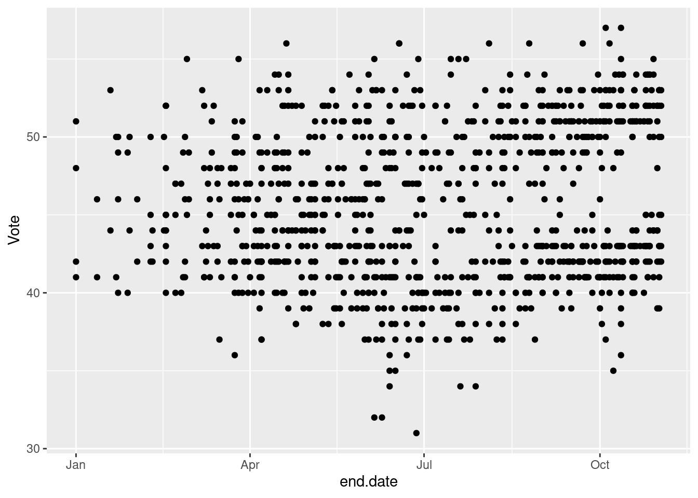
Bit of a mess. But we will make it prettier.

ggplot(data=national_polls, # the data step
aes(x=end.date, y=Vote,
color=Vote_Choice)) + # the map step
geom_point()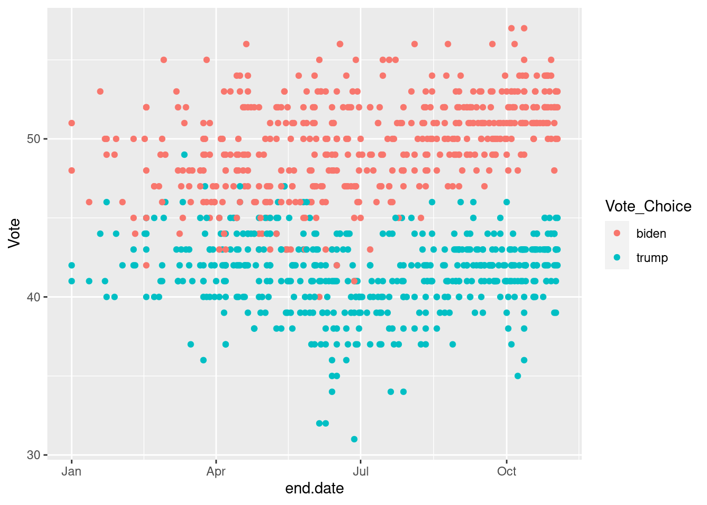
ggplot(data=national_polls, # the data step
aes(x=end.date, y=Vote,
color=Vote_Choice,
shape=Vote_Choice)) + # the map step
geom_point() 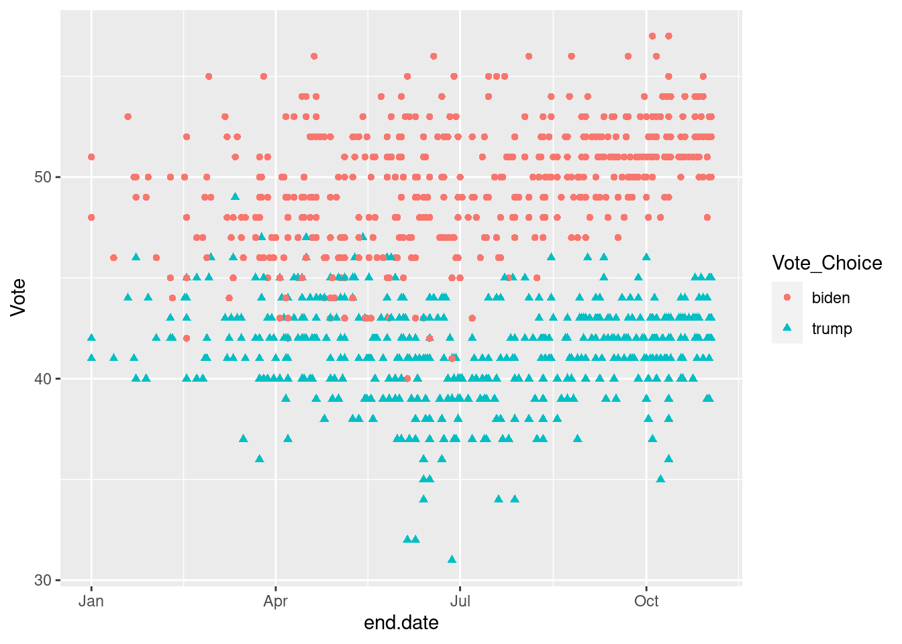
ggplot(data=national_polls, # the data step
aes(x=end.date, y=Vote,
color=Vote_Choice,
shape=Vote_Choice,
alpha=end.date)) + # the map step
geom_point() 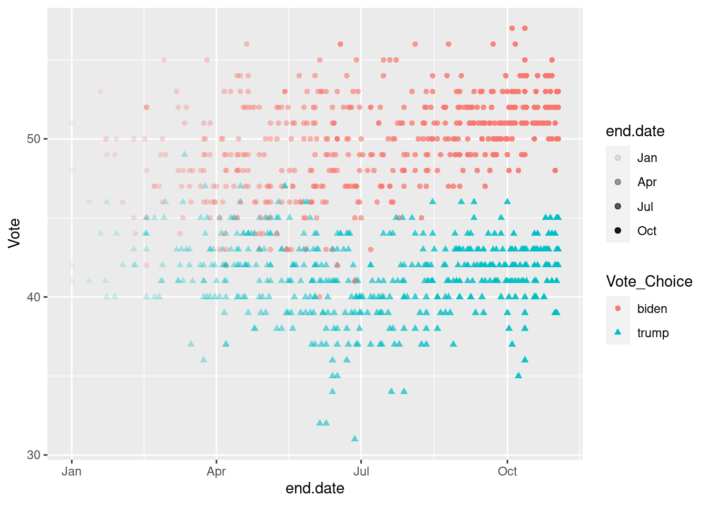 #### Linetype
ggplot(data=national_polls, # the data step
aes(x=end.date, y=Vote,
color=Vote_Choice,
alpha=end.date,
linetype=Vote_Choice)) + # the map step
geom_smooth()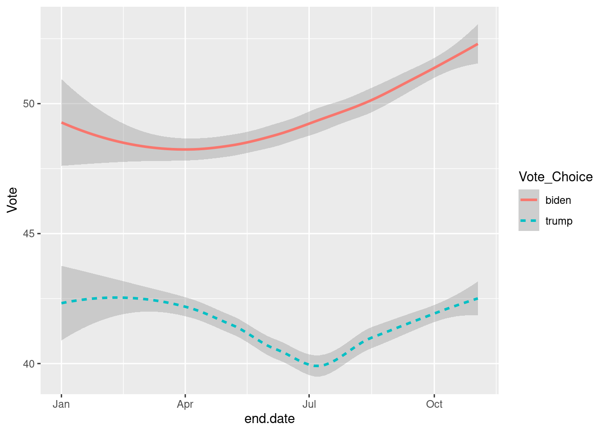
Infinite possibilities to show variations on your dataset and maps your variables to visuals. We will go over some examples of more complete visualizations. Now let’s see some examples of geoms you might consider.
ggplot(data=national_polls,
aes(x=end.date, y=Vote, color=Vote_Choice, fill=Vote_Choice)) +
geom_point(alpha=.2) +
geom_smooth()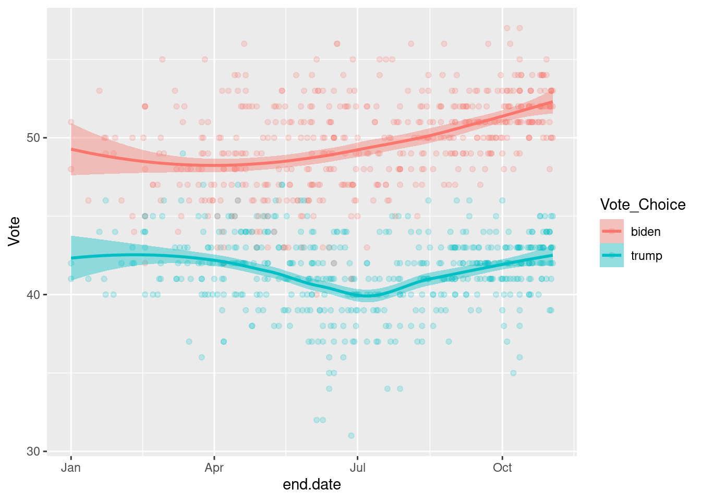
ggplot(data=national_polls,
aes(x=end.date)) +
geom_density(fill="steelblue")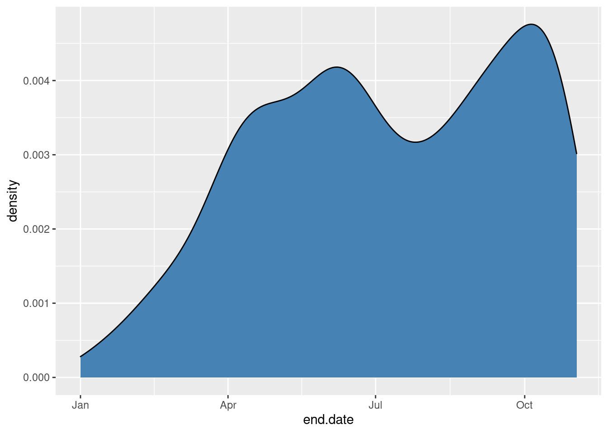
# Another one using the facet_wrap
ggplot(data=state_polls %>% filter(state%in%swing_states)) +
geom_density(aes(x=end.date, fill=state), alpha=.3) +
facet_wrap(~state, ncol=3)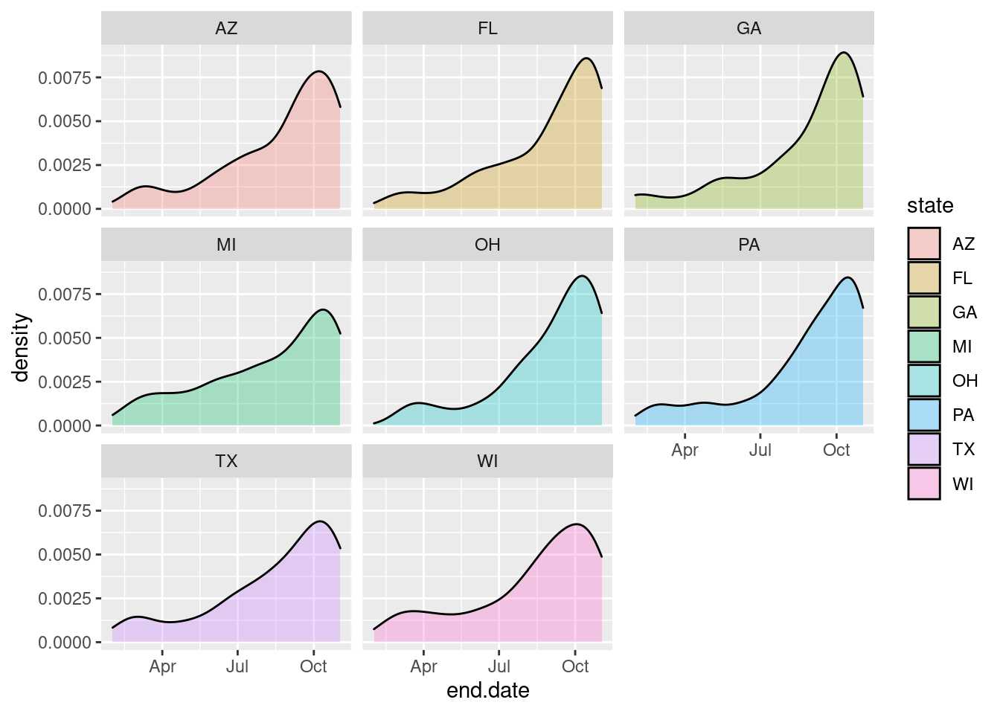
ggplot(data=data_long,
aes(x=end.date, fill=mode)) +
geom_bar() +
scale_fill_brewer(palette = "Set3")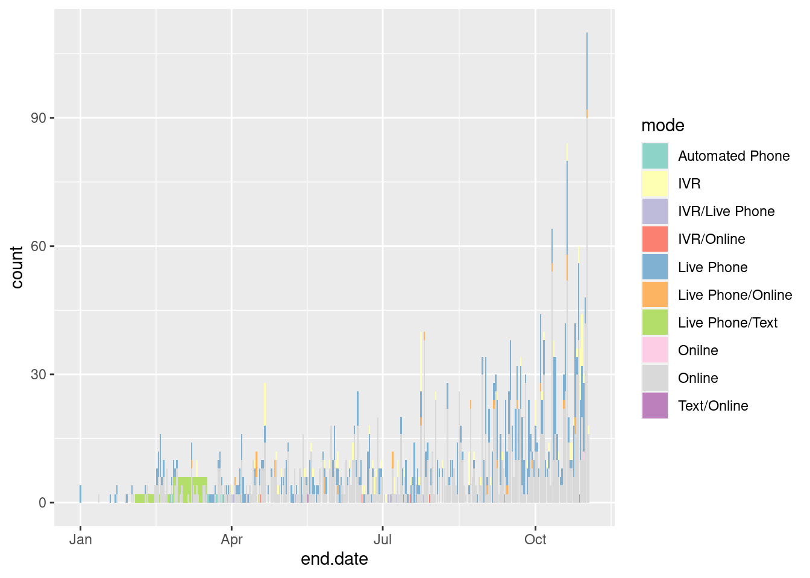
# Another example
ggplot(state_polls %>% filter(state%in%swing_states),
aes(x=Vote,y=fct_rev(state), fill=Vote_Choice)) +
geom_boxplot() +
scale_fill_manual(values=c("biden"="blue","trump"="red")) 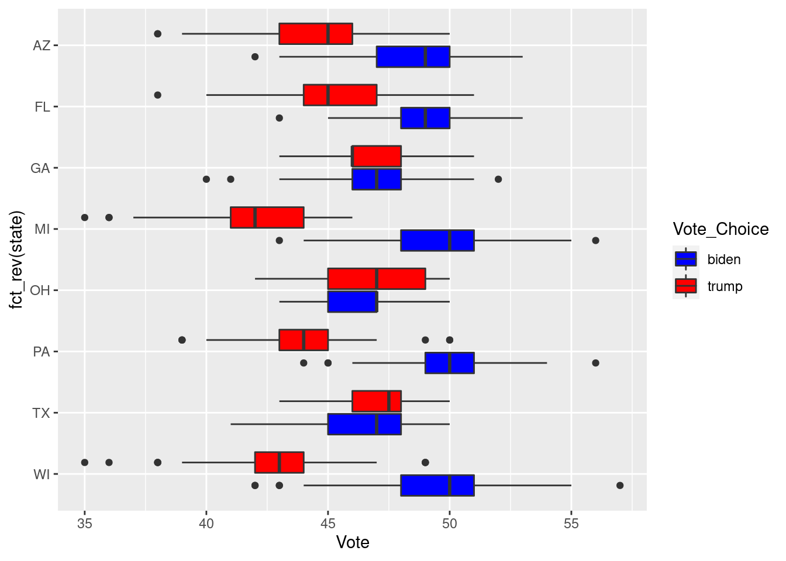
A full set of geoms can be found here
After you are set on the mapping and geoms, the next step is to adjust the scale of your the graph. These functions are usually on the form: scale_aesthethic_type. These functions usually change how the aesthethics are presented. For exemple:
scale_x_log10: To convert the numeric axis to the log scalescale_y_reverse: To reverse the scalescale_fill_manual: To create your own discrete set of fill.scale_colour_brewer(): Change the Pallet of ColoursFrom now on, I will present more complete graphs, that would be similar to one I would add in a research paper.
p <- ggplot(data=national_polls,
aes(x=end.date, y=Vote, color=Vote_Choice, shape=Vote_Choice, fill=Vote_Choice)) +
geom_point(alpha=.2) +
geom_smooth() +
scale_shape_manual(values =c(21, 23)) +
scale_fill_manual(values=c("red", "blue")) +
scale_color_manual(values=c("red", "blue"), , labels=c("Biden", "Trump"),
name= "Vote Choice") +
scale_x_date(date_breaks = "1 month", date_labels = "%b %d") +
guides(fill=FALSE, shape=FALSE) +
labs(x = "End of the Poll", y = "Results",
title = "Polls US Presidential Election",
subtitle = "",
caption = "Source: The Economist")
p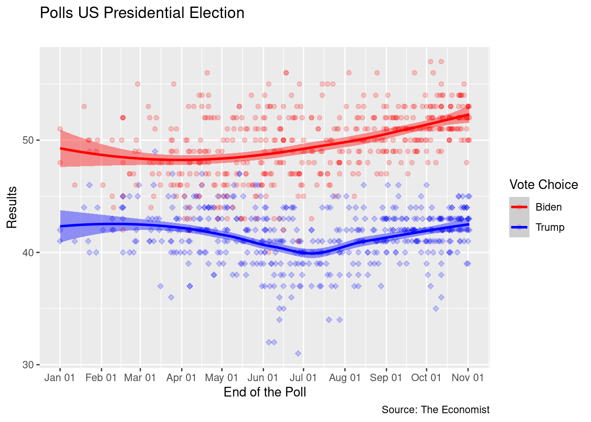
Most of the adjustments you can make on your plot go inside of the theme function. When working on a paper, it is important that your graphs are consistent, and that you add this consistency to your workflow. My suggested approach for this is to create a theme for my graphs, and use the same theme throughout all the plots of the same project. An example below:
# Set up my theme ------------------------------------------------------------
my_font <- "Palatino Linotype"
my_bkgd <- "#f5f5f2"
pal <- RColorBrewer::brewer.pal(9, "Spectral")
my_theme <- theme(text = element_text(family = my_font, color = "#22211d"),
rect = element_rect(fill = my_bkgd),
plot.background = element_rect(fill = my_bkgd, color = NA),
panel.background = element_rect(fill = my_bkgd, color = NA),
panel.border = element_rect(color="black"),
strip.background = element_rect(color="black", fill="gray85"),
legend.background = element_rect(fill = my_bkgd, color = NA),
legend.key = element_rect(size = 6, fill = "white", colour = NA),
legend.key.size = unit(1, "cm"),
legend.text = element_text(size = 14, family = my_font),
legend.title = element_text(size=14),
plot.title = element_text(size = 22, face = "bold", family=my_font),
plot.subtitle = element_text(size=16, family=my_font),
axis.title= element_text(size=14),
axis.text = element_text(size=12, family=my_font),
axis.title.x = element_text(hjust=1),
strip.text = element_text(family = my_font, color = "#22211d",
size = 10, face="italic"))Then you can set your R environment to use your newly created theme in all your plots.
# This sets up for all your plots
theme_set(theme_bw() + my_theme)Or you can do by hand
p +
my_theme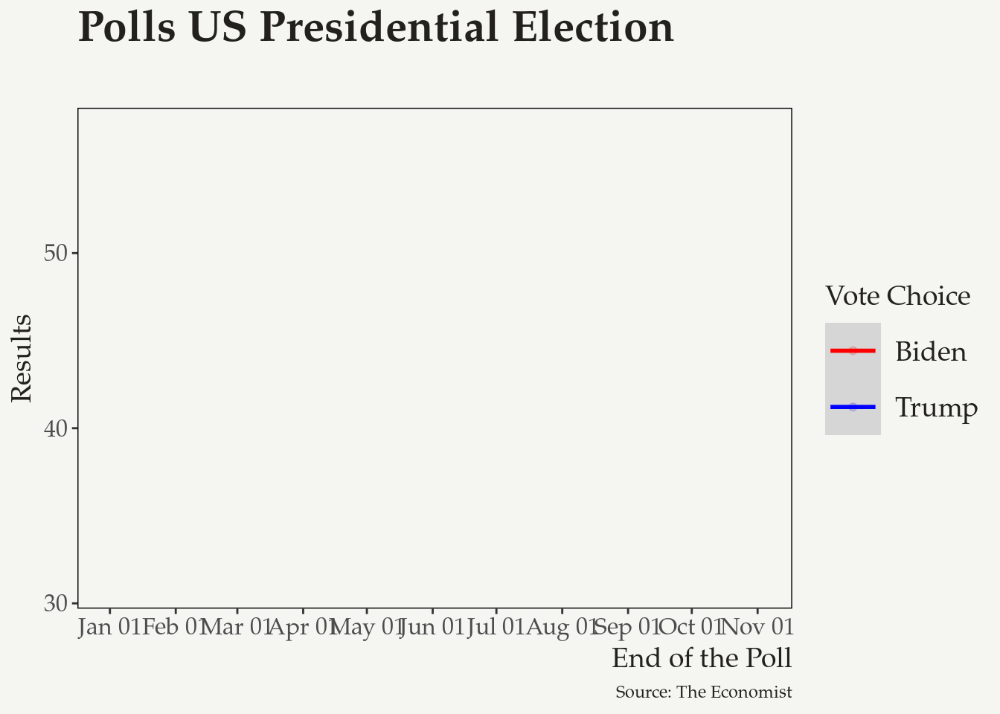
Another option is to use one of the pre-set themes in R
library(ggthemes)
library(hrbrthemes)
p +
theme_minimal()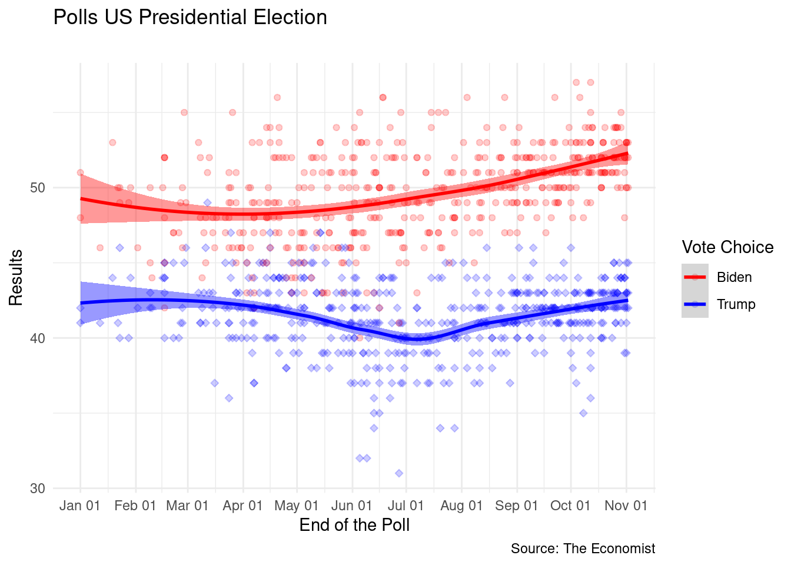
p +
theme_economist()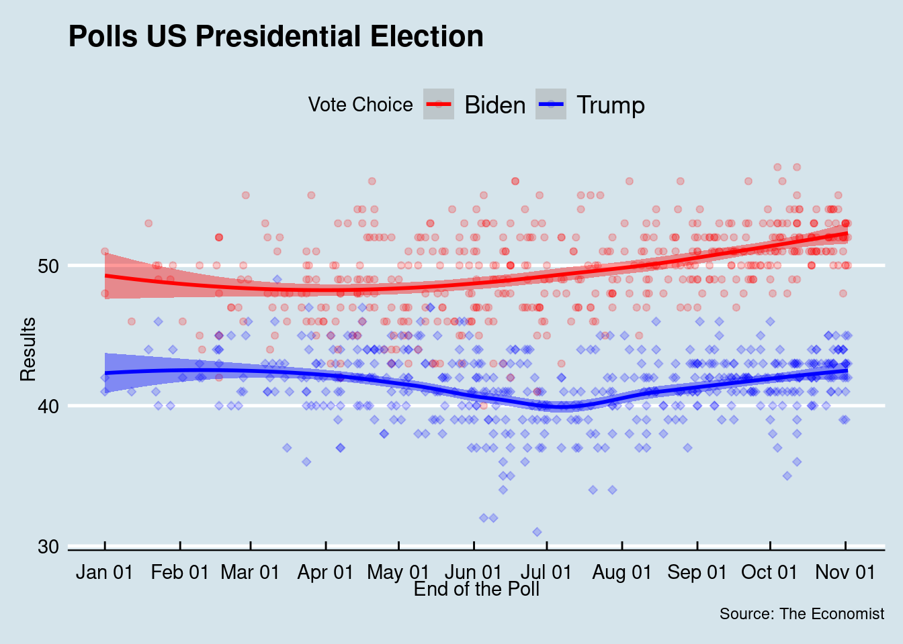
p +
theme_fivethirtyeight()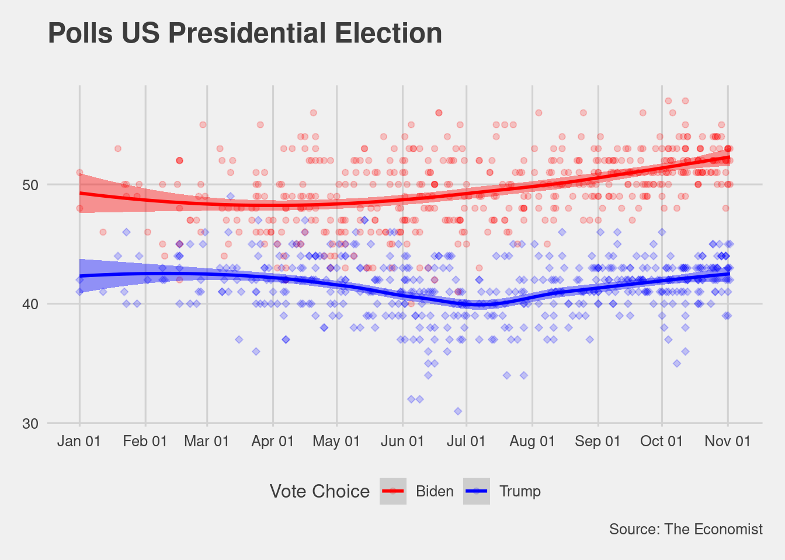
p +
theme_ipsum()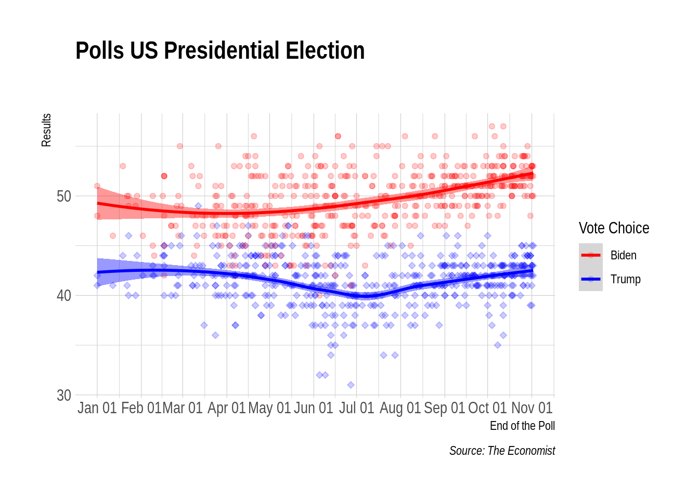
So far, we have discussed how to go from your raw data to informative visualization plots. For this, I assert having your data tidy is a key step to build your visualizations. From this section forward, we will use the same logic to go from your statistical models outputs to plots. We will use David Robinson’s broom package to help us out, and the tidyverse package purrr.
Let’s start with a simple and silly model. We will estimate how Biden results improved over time.
# Separate the data
biden <- national_polls %>%
filter(Vote_Choice=="biden") %>%
mutate(first_day=min(end.date, na.rm=TRUE),
days=as.numeric(end.date-first_day))
# simple linear model
lm_time <- lm(Vote~ days, data=biden)With this model, most of us learned to extract quantities using functions likes coef, predict, summary, among others. A better approach is to use the functions from the broom package. We have three options:
tidy: to extract the model main parametersaugment: to extract observation-level statistics (predictions)glance: to extract model-level statistics.# a data frame
results <- tidy(lm_time)
results## # A tibble: 2 x 5
## term estimate std.error statistic p.value
## <chr> <dbl> <dbl> <dbl> <dbl>
## 1 (Intercept) 46.7 0.318 147. 0.
## 2 days 0.0164 0.00156 10.5 2.06e-23You can plot these quantities directly. The graph for you paper is basically ready.
augment(lm_time)## # A tibble: 495 x 8
## Vote days .fitted .resid .std.resid .hat .sigma .cooksd
## <dbl> <dbl> <dbl> <dbl> <dbl> <dbl> <dbl> <dbl>
## 1 52 305 51.7 0.339 0.126 0.00653 2.71 0.0000519
## 2 52 304 51.6 0.355 0.132 0.00645 2.71 0.0000564
## 3 51 304 51.6 -0.645 -0.239 0.00645 2.71 0.000185
## 4 52 306 51.7 0.323 0.120 0.00661 2.71 0.0000476
## 5 48 304 51.6 -3.64 -1.35 0.00645 2.70 0.00593
## 6 50 305 51.7 -1.66 -0.616 0.00653 2.71 0.00125
## 7 53 305 51.7 1.34 0.497 0.00653 2.71 0.000810
## 8 53 306 51.7 1.32 0.491 0.00661 2.71 0.000800
## 9 53 305 51.7 1.34 0.497 0.00653 2.71 0.000810
## 10 50 306 51.7 -1.68 -0.622 0.00661 2.71 0.00129
## # … with 485 more rows# Plot
augment(lm_time, se_fit = TRUE) %>%
mutate(lb=.fitted - 1.96*.se.fit,
ub=.fitted + 1.96*.se.fit) %>%
ggplot(data=.) +
geom_ribbon(aes(y=.fitted, ymin=lb, ymax=ub, x=days), alpha=.2) +
geom_line(aes(y=.fitted, x=days), color="blue") +
geom_point(aes(y = Vote, x=days), alpha=.2) 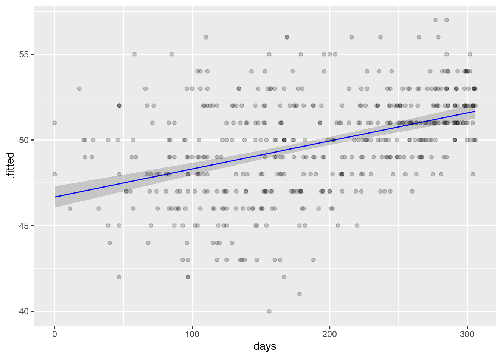
What if I want to run the same model for multiple subgroups? Or multiple different models? Here is where I think some features of the tidyverse world, particularly purrr for functional programming, gets really beautiful. The logic is simple. We will nest our data, run models in the subgroups, tidy the results, and unnest everything in a tidy format dataset.
Let’s see the Biden time trend in a few selected swing states
# Step 1: Nest your data
nested_data <- state_polls %>%
filter(Vote_Choice=="biden") %>%
mutate(first_day=min(end.date, na.rm=TRUE),
days=as.numeric(end.date-first_day)) %>%
group_by(state) %>%
nest()
nested_data## # A tibble: 47 x 2
## # Groups: state [47]
## state data
## <chr> <list>
## 1 MT <tibble [18 × 18]>
## 2 ME <tibble [19 × 18]>
## 3 IA <tibble [32 × 18]>
## 4 WI <tibble [95 × 18]>
## 5 PA <tibble [112 × 18]>
## 6 NC <tibble [104 × 18]>
## 7 MI <tibble [112 × 18]>
## 8 FL <tibble [105 × 18]>
## 9 AZ <tibble [88 × 18]>
## 10 MN <tibble [34 × 18]>
## # … with 37 more rowsWe have a data set with two collumns: the grouped variables and their corresponding data. The data column is called a list-column because it works as a list where every element has a entire dataset. Since we have a list of datasets, we can use functional programming in purrr to run the same models for each of these datasets.
nested_data <- nested_data %>%
mutate(model=map(data, ~ lm(Vote~days, .x))) # .x represent the variable you are mapping
nested_data## # A tibble: 47 x 3
## # Groups: state [47]
## state data model
## <chr> <list> <list>
## 1 MT <tibble [18 × 18]> <lm>
## 2 ME <tibble [19 × 18]> <lm>
## 3 IA <tibble [32 × 18]> <lm>
## 4 WI <tibble [95 × 18]> <lm>
## 5 PA <tibble [112 × 18]> <lm>
## 6 NC <tibble [104 × 18]> <lm>
## 7 MI <tibble [112 × 18]> <lm>
## 8 FL <tibble [105 × 18]> <lm>
## 9 AZ <tibble [88 × 18]> <lm>
## 10 MN <tibble [34 × 18]> <lm>
## # … with 37 more rowsWe have now a new list-column with all our models. Now, let’s use broom to get quantities of interest.
nested_data <- nested_data %>%
mutate(results=map(model, tidy)) %>%
unnest(results) # this is key! it expand your list column
nested_data## # A tibble: 94 x 8
## # Groups: state [47]
## state data model term estimate std.error statistic p.value
## <chr> <list> <list> <chr> <dbl> <dbl> <dbl> <dbl>
## 1 MT <tibble [18 × … <lm> (Interce… 35.5 1.58 22.5 1.59e- 13
## 2 MT <tibble [18 × … <lm> days 0.0369 0.00725 5.09 1.09e- 4
## 3 ME <tibble [19 × … <lm> (Interce… 50.6 2.73 18.5 1.06e- 12
## 4 ME <tibble [19 × … <lm> days 0.00517 0.0127 0.407 6.89e- 1
## 5 IA <tibble [32 × … <lm> (Interce… 42.6 1.53 27.8 5.68e- 23
## 6 IA <tibble [32 × … <lm> days 0.0172 0.00690 2.50 1.81e- 2
## 7 WI <tibble [95 × … <lm> (Interce… 44.8 0.603 74.2 6.76e- 84
## 8 WI <tibble [95 × … <lm> days 0.0259 0.00294 8.83 6.60e- 14
## 9 PA <tibble [112 ×… <lm> (Interce… 46.4 0.486 95.4 7.18e-107
## 10 PA <tibble [112 ×… <lm> days 0.0172 0.00224 7.68 7.20e- 12
## # … with 84 more rowsWith the unnest, we have a beautiful tidy data set with our model parameters. More important, it is a single data frame with both informations: parameters and subgroups (states). Now, let’s plot:
# first, remove the intercept
to_plot <- nested_data %>%
filter(term!="(Intercept)") %>%
mutate(ub=estimate+1.96*std.error,
lb=estimate-1.96*std.error) %>%
drop_na()
# graph
ggplot(to_plot, aes(x=fct_rev(state),y=estimate, ymin=lb, ymax=ub)) +
geom_pointrange(shape=21, fill="blue", color="black", alpha=.8) +
geom_hline(yintercept = 0, linetype="dashed", color="gray") +
coord_flip() +
theme_minimal() +
labs(x = "Linear Time Trend by State", y= "Biden Support in the Polls") 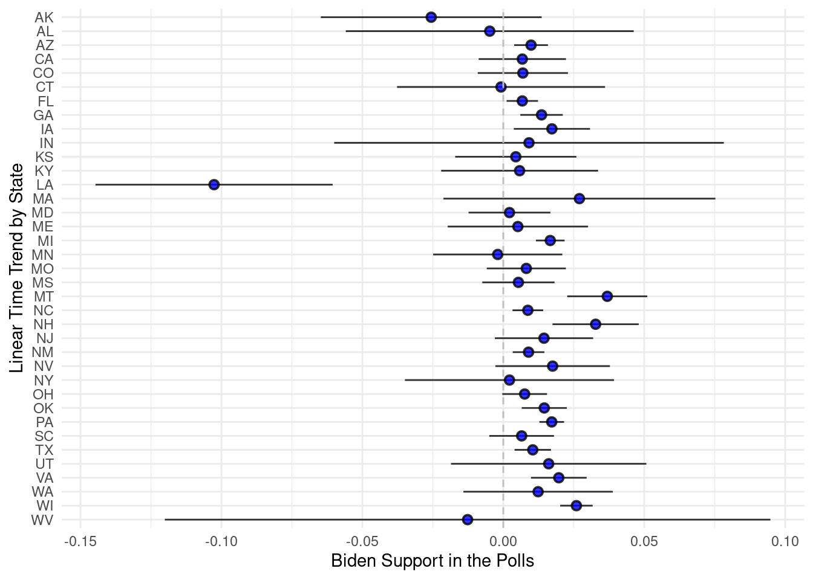
To conclude our workshop, I will show you the code my recent paper (co-authored with Ernesto Calvo) forthcoming at the Latin American Politics and Society. The paper is about partisanship and risk perceptions about COVID-19, and uses both experimental and observational data. I will focus on the descriptive analysis and the simple regression models we use to show partisan difference of risk perceptions in Brazil. The paper and replication files can be found here on my github account.
The plan is to estimate a model of partisanship on three different outcomes. Let’s see how we can do this with the tools we learned so far.
load("CV_data.Rdata")
library(tidyverse)
library(tidyr)
d_pivot <- d %>%
pivot_longer(cols=c(covid_job, covid_health, covid_government),
names_to="covid",
values_to="covid_values") data_nested <- d_pivot %>%
group_by(covid) %>%
nest() %>%
mutate(model=map(data, ~ lm(as.numeric(covid_values) ~
runoff_haddad +
runoff_bolsonaro +
income + gender + work +
as.numeric(education) + age , data=.x)),
res=map(model,tidy)) %>%
unnest(res) %>%
mutate(lb=estimate - 1.96*std.error,
up= estimate + 1.96*std.error)Everything we need is there. Now, I will just fix the labels. Get your labels correct before plotting. It is easier to do this in the data processing than inside of ggplot.
to_plot <- data_nested %>%
filter(str_detect(term, "runoff")) %>%
mutate(labels_iv=fct_recode(term, "Haddad Voters"="runoff_haddadOn",
"Bolsonaro Voters"="runoff_bolsonaroOn")) %>%
mutate(outcome= ifelse(covid=="covid_job",
"How likely is it that you \n could lose your job? ",
ifelse(covid=="covid_health",
"How likely will your health \n be affected by COVID-19?",
"Has the government response \n been appropriate ?"))) #pick my colors
pal <- RColorBrewer::brewer.pal(9, "Spectral")
#graph
ggplot(to_plot, aes(y=estimate, x=labels_iv,
ymin=up, ymax=lb, color=labels_iv)) +
geom_pointrange(shape=21, fill="white", size=2) +
labs(x="", y="Point Estimates",
title = "\nPartisanship, Risk Perceptions and Government Responses to Covid in Brazil",
subtitle = "Regression Estimates with Controls by Income, Gender, Age, Education, and Occupation.",
caption ="Note: Baseline are Independent Voters") +
geom_hline(yintercept = 0, linetype="dashed", color="darkred") +
scale_color_manual(values=c("Bolsonaro Voters"=pal[9], "Haddad Voters"=pal[1]),
name="Who would you vote for?") +
facet_wrap(~outcome) +
theme_bw() +
theme(strip.text = element_text(size=7),
axis.text.x = element_blank()) 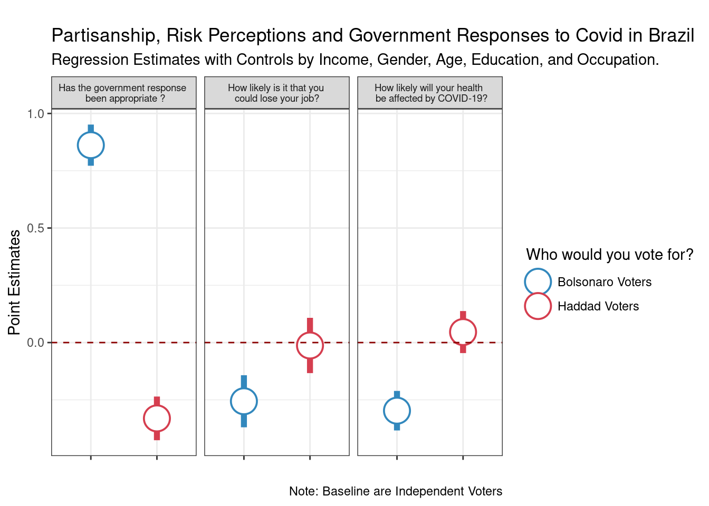